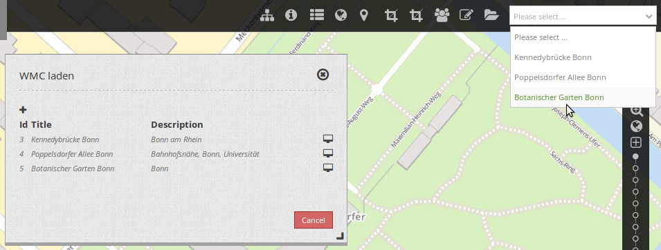
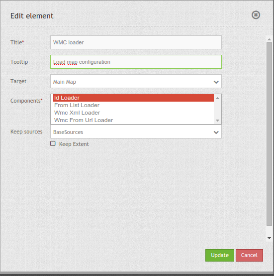

WMC Loader (WMC laden)¶
Mapbender kann Konfigurationen speichern. Mehr dazu unter WMC Editor. Diese Konfigurationen mit dem Element WMC-Lader geladen werden.
Sie können den WMC-Lader ihrer Applikation als Selektbox oder als Button, der einen Dialog öffnet, hinzufügen.
Wenn Sie eine Konfiguration auswählen, werden die Dienste der Konfiguration in Ihrer vorhandenen Applikation zusammengefügt.
{kind=link}
Konfiguration¶
{kind=link}
- Title: Titel des Elements. Dieser wird in der Layouts Liste angezeigt und ermöglicht, mehrere Button-Elemente voneinander zu unterscheiden. Der Titel wird außerdem neben dem Button angezeigt, wenn “Beschriftung anzeigen” aktiviert ist.
- Tooltip: Text, der angezeigt wird, wenn der Mauszeiger eine längere Zeit über dem Element verweilt.
- Target: ID des Kartenelements, auf das sich das Element bezieht.
- Components:
- Id Loader: lädt die Konfiguration per ID beim Start der Applikation z.B. ?wmcid=<wmcid>,
- From List Loader: lädt die Konfiguration aus einer Liste
- Wmc Xml Loader: lädt die Konfiguration aus einer Datei
- Wmc From Url Loader: lädt das WMC über eine URL ?wmcurl=<wmcurl>
- Keepsources: definiert, was mit den Diensten in der Applikation geschehen soll.
- no: keine Quellen werden behalten. Alle werden vom WMC überschrieben.
- BaseSources: Behält die BaseSources und die anderen werden überschrieben. Z.B. im Zusammenhang mit einem BaseSourceSwitcher.
- AllSources: Behält alle Quellen und fügt die Datenquellen aus dem WMC hinzu.
- Keep Extent: behält den aktuellen Extent, Standard ist false (erscheint im Extent der Konfiguration).
YAML-Definition:¶
title: WMC Loader
tooltip: 'Load configuration' # Text des Tooltips
target: map # Name des Kartenelements
components: ['idloader', 'listloader', 'wmcloader'] # Komponenten:
# idloader - lädt die Konfiguration per ID beim Start der Applikation z.B. ?wmcid=<wmcid>
# listloader - lädt die Konfiguration aus einer Liste
# wmcloader - lädt die Konfiguration aus einer Datei
keepSources: false # definiert, was mit den Diensten in der Applikation geschehen soll
# Standard ist false (no)
# BaseSources - behält nur die als BaseSource markierten Dienste in der Anwendung
# AllSources - behält die Dienste, die bereits geladen sind, in der Anwendung
keepExtent: false # behält den aktuellen Extent, Standard ist false
# (erscheint im Extent der Konfiguration)
Das Element kann als Selektbox oder als Dialog konfiguriert werden. Wenn das Element als Dialog verwendet wird, wird ein Button benötigt. Siehe unter Button für die Konfiguration.
Class, Widget & Style¶
- Class: Mapbender\WmcBundle\Element\WmcLoader
- Widget: <Put Widget name here>
- Style: <Put name of css file here>